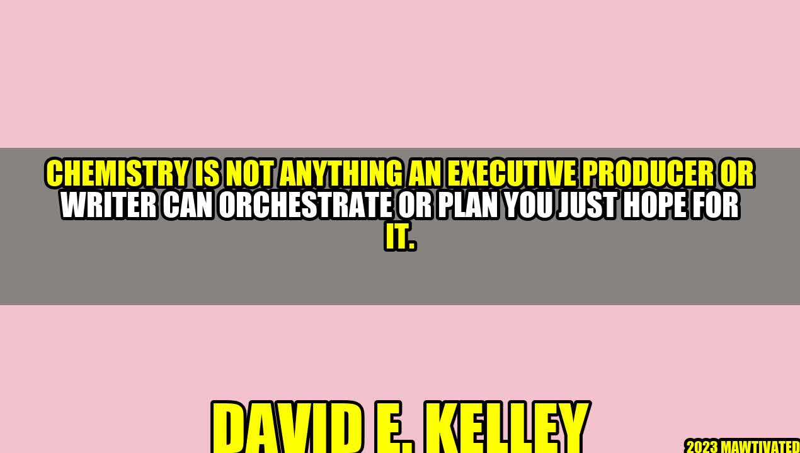

The Chemistry of Successful Productions

The entertainment industry is a highly competitive field that requires various talents, skills, and resources to produce successful productions. Yet, despite having all the necessary elements, some shows can still fail to resonate with audiences. One critical factor that often gets overlooked is chemistry.
Chemistry is an intangible quality that occurs between performers and crew members. It is the magic that sparks creative ideas and translates them into captivating scenes. It is the dynamic that cultivates trust, respect, and authenticity. And it is the driving force that pulls everyone towards a common goal: to create something unforgettable.
David E. Kelley, a legendary producer, and writer, once said, "Chemistry is not anything an executive producer or writer can orchestrate or plan; you just hope for it." Based on his experience, chemistry is the crucial ingredient that separates good productions from great ones.
The Power of Chemistry in Productions
Let's take a look at some examples of shows that have benefitted from strong chemistry:
- Friends – The iconic sitcom is known for its lovable cast of characters who seem to genuinely enjoy each other's company. The actors' natural rapport and comedic timing created a harmonious atmosphere that resonated with viewers around the world.
- Breaking Bad – The critically acclaimed drama was a masterpiece of storytelling, cinematography, and acting. However, one of its most significant strengths was the dynamic between Bryan Cranston and Aaron Paul. Their chemistry was so undeniable that the creators expanded their roles beyond the original plan.
- Game of Thrones – The epic fantasy series had an enormous ensemble cast with many complex storylines. However, the main characters' chemistry was vital in making the show emotionally engaging. The audience could feel the connections and conflicts between the different houses and individuals, which made the stakes feel higher.
These examples demonstrate that chemistry can elevate productions far beyond their technical merits. It creates an emotional resonance that connects with audiences and generates buzz that goes beyond ratings and revenue.
How to Foster Chemistry on Set
Chemistry is not something that can be forced or manufactured. However, there are ways to cultivate an environment that encourages it:
- Encourage collaboration: Instead of dictating every detail, give your performers and crew room to contribute their ideas and insights. When people feel that they are valued and respected, they are more likely to invest in creating something worthwhile.
- Establish trust: Encourage open communication and honesty within your team. When people feel safe to express themselves, they are more willing to take risks and try new things.
- Cultivate a positive attitude: Enthusiasm and positivity are contagious. When people are passionate about what they do, it shows in their work and inspires others to give their best.
"Chemistry is not anything an executive producer or writer can orchestrate or plan; you just hope for it." - David E. Kelley
The Bottom Line
In conclusion, chemistry is a vital component of successful productions. It is the elusive quality that can take a show from good to great. While it cannot be manufactured or scripted, it can be fostered by creating an environment that encourages collaboration, trust, and positivity.
To maximize your chances of creating a memorable production, remember these key points:
- Chemistry is the intangible quality that separates good productions from great ones.
- Chemistry is fostered by creating an environment that encourages collaboration, trust, and positivity.
- Chemistry cannot be scripted, but it can be cultivated by valuing performers and crew members and allowing them to contribute their ideas and insights.
Hashtags:
- #chemistryinproductions
- #successfulproductions
- #entertainmentindustry
SEO Keywords:
chemistry, successful productions, executive producer, writer, entertainment industry
Article Category:
Entertainment
Curated by Team Akash.Mittal.Blog
Curated by Team Akash.Mittal.Blog
Share on Twitter Share on LinkedIn